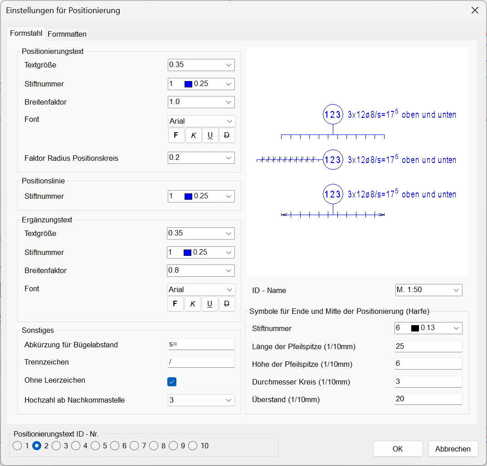
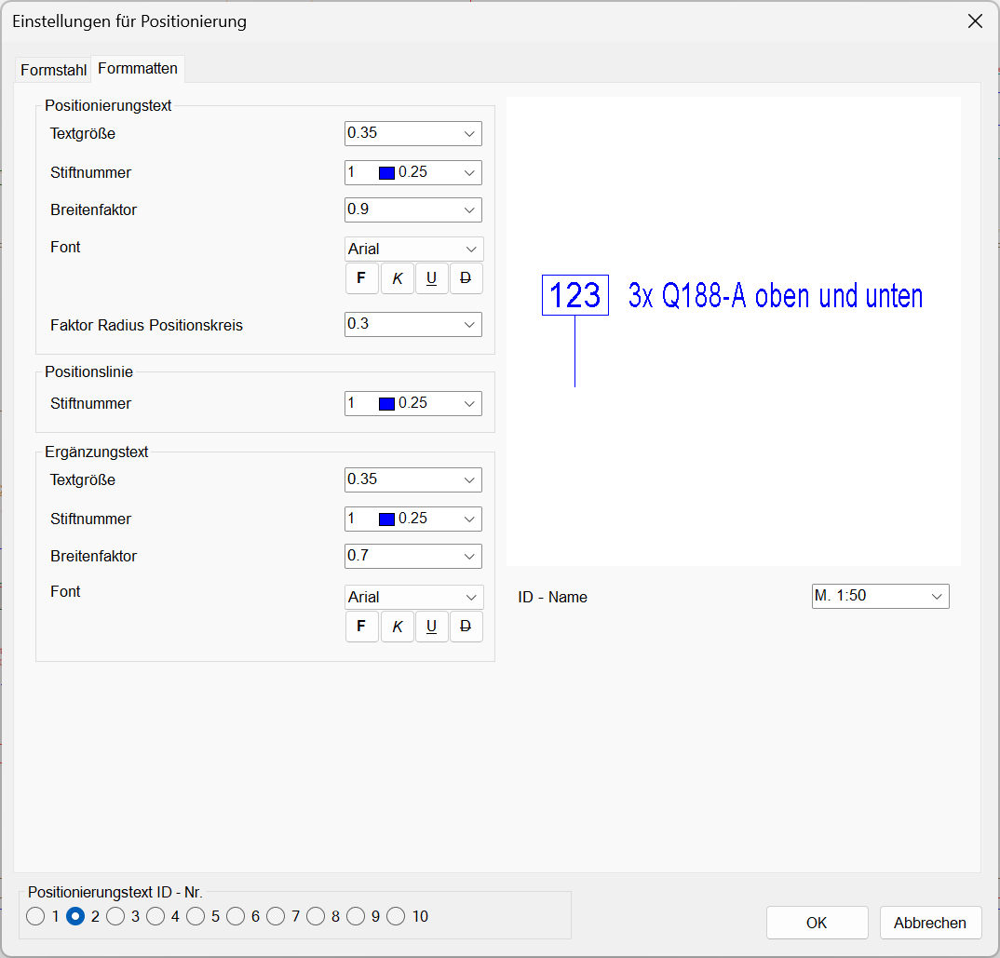

")
")
Einstellungen für die Darstellung der Formstahl- und Formmattenpositionierungen. Öffnet den Dialog Einstellungen für Positionierung mit der Registerkarte Formmatten.
Optionen im Dialog "Einstellungen für Positionierung"

Konfiguration der Formstahl-Positionierungsstile (IDs).  §Wählen Sie unter Positionierungstext ID-Nr. (im unteren Dialogbereich) die ID, deren Einstellungen Sie ändern wollen. Der ID-Name der gewählten ID wird unter der Vorschau angezeigt. §Wählen Sie die gewünschten Darstellungseigenschaften (s. Optionen). Änderungen einzelner Attribute werden sofort in der Vorschau angezeigt. §Geben Sie im Auswahlfeld für ID-Name einen möglichst selbsterklärenden Namen ein (optional). Im Auslieferungszustand haben alle IDs den Namen "Standard". §Klicken Sie auf OK, um die Einstellungen zu speichern. Der Dialog wird geschlossen; die Darstellung der Formstahl-Positionierungen kann über die Stilauswahl im Funktionsbereich für Formstahl [Formst | BiPos] gewählt werden. OptionenPositionierungstext
Positionslinie
Ergänzungstext
Sonstiges
ID-Name Angabe des Namens für die unter der Option Positionierungstext ID-Nr. gewählten ID. Symbole für Ende und Mitte der Positionierung (Harfe)
Positionierungstext ID-Nr. Auswahl des zu konfigurierenden Positionierungsstils. Eine Bezeichnung für die ID-Nr. können Sie unter ID-Name angeben. |

Konfiguration der Formmatten-Positionierungsstile (IDs).  So wird's gemacht: §Wählen Sie unter Positionierungstext ID-Nr. (im unteren Dialogbereich) die ID, deren Einstellungen Sie ändern wollen. Der ID-Name der gewählten ID wird unter der Vorschau angezeigt. §Wählen Sie die gewünschten Darstellungseigenschaften (s. Optionen). Änderungen einzelner Attribute werden sofort in der Vorschau angezeigt. §Geben Sie im Auswahlfeld für ID-Name einen möglichst selbsterklärenden Namen ein (optional). Im Auslieferungszustand haben alle IDs den Namen "Standard". §Klicken Sie auf OK, um die Einstellungen zu speichern. Der Dialog wird geschlossen; die Darstellung der Formmatten-Positionierungen kann über die Stilauswahl im Funktionsbereich für Formmatten [Formma | BiPos] gewählt werden. OptionenPositionierungstext
Positionslinie
Ergänzungstext
ID-Name Angabe des ID-Namens für die unter der Option Positionierungstext ID-Nr. gewählte ID. Positionierungstext ID-Nr. Auswahl des zu konfigurierenden Positionierungsstils. |